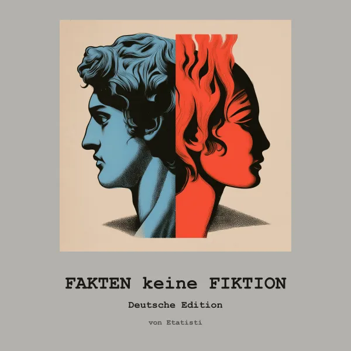
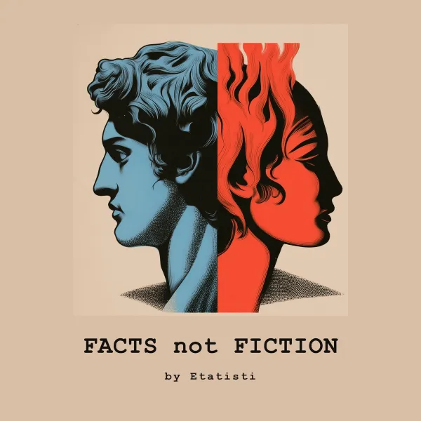
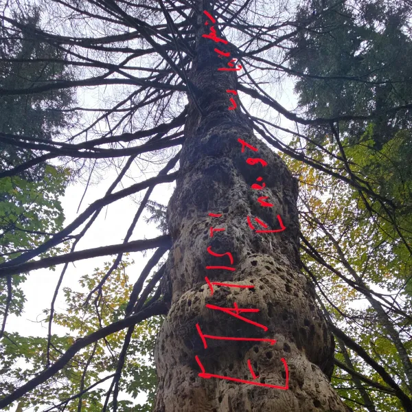
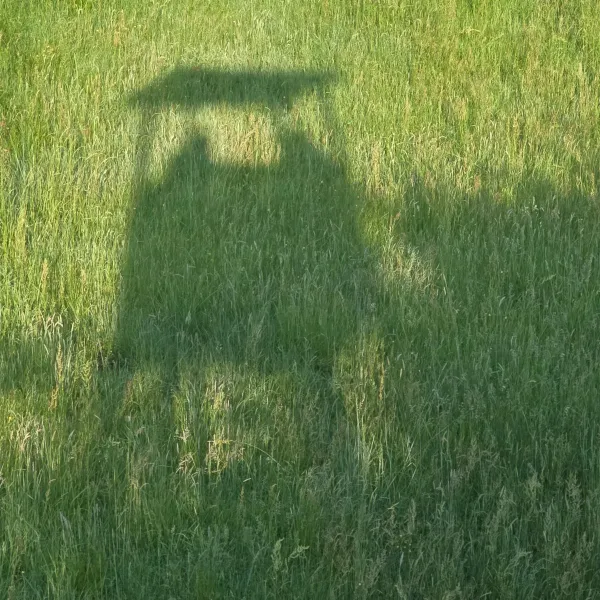
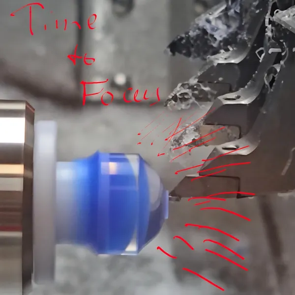
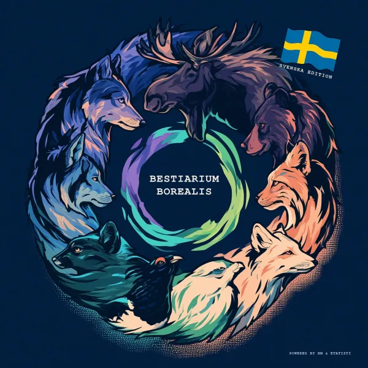
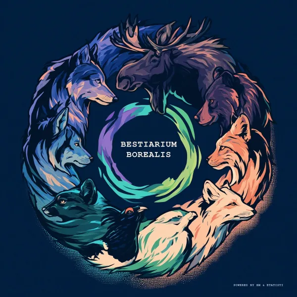

Kommer snart
Brainpunk – texter att tänka på, musik att njuta av.
Lyssna nuEtatisti är brainpunk – texter att tänka på, musik att njuta av. Av en slump kanske du förstår eller lär dig något – och där en låt är ett dåligt exempel visar den hur man inte gör. Varningstext: kan innehålla spår av sarkasm. Oftast mer än spår.
Låtarna bär verklig last: termodynamikens fyra huvudsatser, Kirchhoffs lagar, energiåtbetalningen från ett fat olja, aritmetiken bakom politiska löften. Varje text är skriven och faktagranskad av en människa som på dagarna driver riktiga maskiner och riktiga balansräkningar och på nätterna undrar varför politiken fortsätter att rösta mot fysiken. Ljudet skapas med AI-verktyg och är ärligt märkt som sådant – maskinen är instrumentet, aldrig upphovspersonen.
Stilmässigt vägrar Etatisti att hålla sig i ett enda körfält. Big beat bredvid ballad, industriellt stampande bredvid italiensk solskenspop, electro-swing bredvid ett viskat outro – vad budskapet än behöver, levererar spektrumet. Albumen kommer på flera språk – engelska, tyska, italienska, svenska – för fakta stannar inte vid gränser, och det borde inte skämten heller.
Längst fram: tre avatarer under en norrskenshimmel – en David i marmor för iskallt förnuft, en cyborg i krom för maskinen mellan oss, en krönt Kleopatra för begär och makt. De sjunger om entropi, energi och en och annan minister, och de låtsas aldrig att fiktion är fakta.
Om en låt får dig att skratta, kolla fotnoterna: det är förmodligen sant. Fakta, inte fiktion. Tiden är knapp – få den att räkna.
Låtar om termodynamikens huvudsatser, Kirchhoff, Carnot, EROEI och energi och civilisation. Albumet FACTS not FICTION på engelska, tyska och italienska. Utforska →



Satirpunk på tyska om koalitionsavtalet, Bärbel Bas, Lars Klingbeil och ECB: Etatisti No. I – fyra låtar som räknar på politiska löften. Utforska →

Time to FOCUS: punklåtar om Ortho-K, skleral- och RGP-linser, närsynthet och torra ögon – för optiker, linsbärare och föräldrar till närsynta barn. Utforska →

Peace of Mind: fem singer-songwriter-låtar om gränser, jämvikt, en omstart i huvudet och ett stilla sinne – för eftertänksamma stunder och den som tänjer sina gränser. Utforska →
BESTIARIUM BOREALIS: åtta berättande låtar om Nordens djurliv – vargflock, älg, björn, lo, räv och hare – på tyska och i en svensk utgåva. Utforska →

